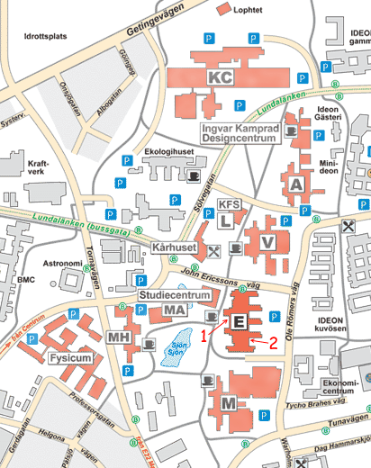
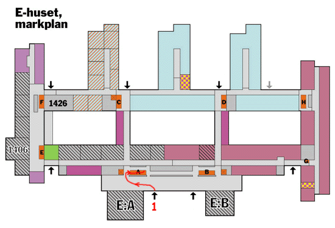
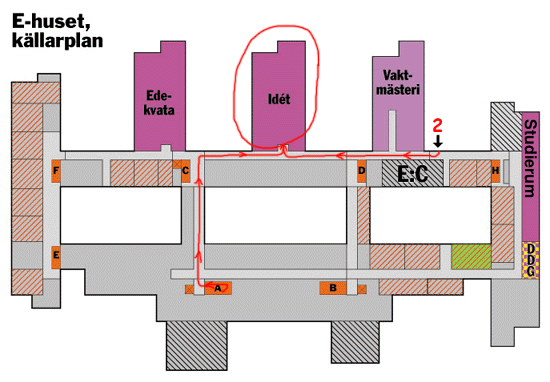

Where is E-huset?
E-huset is marked with an E on the map. The red 1 is the main entrance, and 2 is the entrance closest to iDét. The doors lock at 18:00, so it's best if you show up a bit before then.

Where is iDét?
The black arrows show the entrances, the red numbers are the same entrances as the map above, and the red arrows show the closest path to iDét.


Where are the study rooms?
If you stand outside iDét facing the door, turn right and walk south until you reach the end of the corridor.